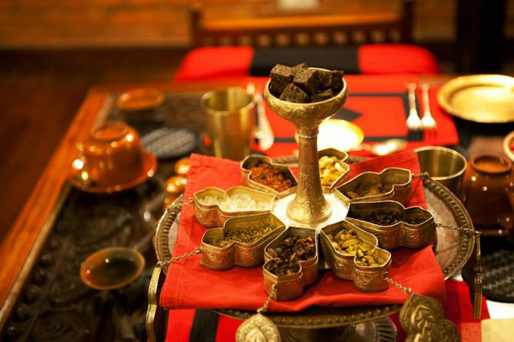

History of Nepal
The history of Nepal is characterized by its isolated position in the Himalayas and its two neighbors, India and China. Due to the arrival of disparate settler groups from outside through the ages, it is now a multi-ethnic, multi-cultural, multi-lingual country. Its population is predominantly Hindu with significant presence of Buddhists, who were in majority at one time in the past. More
Central Nepal was split in three kingdoms from the 15th to 18th century, when it was unified under the Gorkha monarchy. The national language of Nepal is called 'Nepali', a name given - long after unification of Nepal - to the language called Khas Kura. Nepal experienced a failed struggle for democracy in the 20th century. During the 1990s and until 2008, the country was in civil strife. More
A peace treaty was signed in 2008 and elections were held in the same year. Many of the ills of Nepal have been blamed on the royal family of Nepal. In a historical vote for the election of the constituent assembly, members of constituent assembly voted to oust the monarchy in Nepal. In June 2008, Parliament ousted the royal household. Nepal was formally renamed the Federal Democratic Republic of Nepal when it became a federal republic. More
Before Nepal's emergence as a nation in the latter half of the 18th century, the designation 'Nepal' was largely applied only to the Kathmandu Valley and its surroundings. Thus, up to the unification of the country, Nepal's recorded history is largely that of the Kathmandu Valley. References to Nepal in the Mahabharata epic, in Puranas and in Buddhist and Jaina scriptures establish the country's antiquity as an independent political and territorial entity.
Weather
| Average (°C) | Rain (mm) | |||
|---|---|---|---|---|
| January | 3.9 | 18.5 | ||
| February | 5.2 | 24.2 | ||
| March | 9.8 | 29.7 | ||
| April | 13.9 | 44.7 | ||
| May | 16.8 | 83.8 | ||
| June | 18.7 | 215.7 | ||
| July | 18.7 | 351.1 | ||
| August | 18.4 | 311.3 | ||
| September | 17.2 | 196.9 | ||
| October | 13.4 | 54.9 | ||
| November | 8.9 | 8.6 | ||
| December | 5.3 | 11.6 |
Places to visit
Kathmandu
Kathmandu is the bustling, slightly dusty and never boring capital and usually the first stop to find some of the best places to visit in Nepal.
One of the best things about Kathmandu has to be the eclectic mix of temples, historic sites, shrines, restaurants and bustling streets. Once you’re in the city, make sure to head over to the; stunning Pashupatinath Temple, the UNESCO site of Boudhanath Stupa, the (monkey temple of) Swayambhunath and the Kopan Monastery.
You can also plan a hiking or trekking trip, shop your heart out at the Thamel area and eat delicious local grub at restaurants like Forest and Plate, Places, and Yangling. Don’t forget to buy some gorgeous handicrafts while you’re here, too. Some good spots for gifts are; SK Handicrafts and Local Women’s Handicrafts.
Nagarkot

For breathtaking views of the mighty Himalayas, head to this picturesque hill station in Nepal that really is one of the best places to visit in Nepal – especially if you love the mountains. Located close to Bhaktapur, Nagarkot is the perfect place to relax and take in the stunning views of eight Himalayan ranges along with spectacular sunrises and sunsets (if the weather holds out). You can also go trekking, mountain biking, and even try paragliding if you’re feeling like a total daredevil.
Pokhara
The beautiful city of Pokhara is on the shores of Lake Phewa and is best known for its unparalleled views of the snow-capped Annapurna Himalayan range… which, honestly, is more impressive than anything that can be shown in a picture. I have so many great memories from Pokhara, it truly is one of the best places to visit in Nepal – especially if you’re on a trip around the country.
Sagarmatha National Park
One reason to visit this place? That it is home to the pièce de résistance of the Himalayas, Mount Everest itself! You can also see dramatic peaks like Lhotse, Cho Oyo, Nuptse, Thamserku, Pumori, and Amadablam.
Other than the dramatic mountainscape, glaciers, and valleys, Sagarmatha National park is also home to many animal species like the snow leopard, red panda, Himalayan tahr, black bears, and choral. It really is one of the best places to visit in Nepal – if you’re looking for tranquil nature and wildlife.
Lumbini

The birthplace of Gautam Buddha, Lumbini is one of the most significant sites in Buddhism and a truly stunning stop on your trip around Nepal.
Whether you’re a believer or not, Lumbini will wow you with its beauty and tranquillity – I literally was in awe whilst we were there. Visit the Maya Devi Temple, the Lumbini Monastic Site, the Royal Thai Monastery, the World Peace Pagoda or just stroll around and relax in the gardens if that’s more your thing.
Restaurants
El Mediterraneo
El Mediterraneo is a charming, Spanish-themed restaurant lovingly run by owner Bibhushan Raj Joshi, and known in the Kathmandu Valley region for it delicious Mediterranean cuisine. The kitchen serves a wide array of authentic Spanish dishes including the classics, like gazpacho and paellas, as well as lesser-known delicacies like chicken with pisto (a Spanish stew of onions, garlic, peppers, tomato, aubergine and courgette) and natillas, a Spanish custard dessert jazzed up with vanilla and cinnamon, alongside a number of fusion dishes adapted specifically to Nepalese taste buds, like the calamari stuffed with spinach, paneer, raisins and rice.
The restaurant’s homely yet classic design evokes a relaxing Mediterranean atmosphere, while the friendly staff present fresh, imaginative dishes sure to satisfy Lalitpur’s locals and visitors alike.
Krishnarpan
Within the grounds of Dwarika’s Hotel is Krishnarpan, a restaurant serving upmarket Nepalese cuisine modeled on the ‘slow dining’ experience, where all ingredients are grown on Dwarika’s very own organic farms. The hotel and restaurant decor draws its influence from a traditional Newari style, while the hotel, which recently won the PATA (Pacific Asia Travel Association) Heritage Award, is home to a large collection of 13th century Nepalese artifacts. The traditional dining experience features low-seated tables where guests take off their shoes and sit on cushions to dine. Meals ranging from six to 22 courses are available, giving diners a chance to experience a wide variety of local food, including bandel tareko, a dish of grilled wild boar and spices, and kukhura ko masu, a Nepalese take on a chicken curry – all perfectly complimented by a glass of rakshi, a rice-based liquor.
Bhojan Griha
Literally meaning ‘house of food’, the huge Bhojan Griha building dates back over 150 years and was once home to the royal priest to the King of Nepal. The four-story building took six years to restore back to its former glory, with all renovations done by locals using traditional building methods. Bhojan Griha’s large dining hall, Putali Baithak, seats over 250 guests and often hosts cultural shows with traditional Nepalese music and dancing. An architectural allusion to the style of Rana palaces, Putali Baithak serves authentic Newari dishes using local, organic produce. Although the exotic menu features many tasty dishes, a particularly intriguing combination includes the jhaneko mas ko dalwith sada bhuja (split black lentils spiced with jimmu and served with steamed white rice), and sikarni, a Nepalese dessert made with yogurt, nuts and sweet spices.
Le Sherpa

Le Sherpa prides itself on being ‘a European kitchen with Sherpa hospitality’. A beguiling gem of a restaurant set in a picturesque courtyard and gardens, the restaurant is far detached from the hustle and bustle of busy Kathmandu. The simple and modern décor of Le Sherpa’s intimate dining space is complemented by an outdoor seating area, covered by a high ceiling and draped in twinkling lights. Le Sherpa aims to set a high standard of dining in Nepal and sources its ingredients from sustainable local producers. The contemporary European menu features delights such as homemade braised rabbit ravioli with wilted rocket and Parmesan, or slow-roasted pork belly with mustard mash and a red wine sauce.